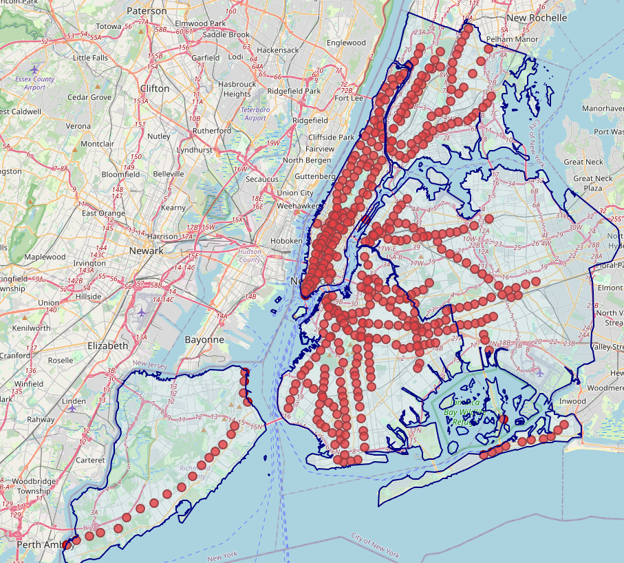

Your Professional Title or Tagline
Hi! I'm Waleed, I grew up in the suburbs of Chicago and studied Data Science and Applied Statistics at the University of Illinois Chicago. During my time there, I have fallen in love with exploring the city using the CTA. Public transit systems and maps have always been really cool to me, and being able to explore a beautiful city on the train is a blessing.
During my time at UIC I have had a lot of fun trying to make tools that map cities and make the transit system more accesible and easier to use. The goal is to make maps that allow easier access to all kinds of city resources that are often underutilized.
I also love music! I love busking on the subway when I get a chance, and I love catching a concert when I get a chance.
Interactive map displaying real-time train arrivals for all 472 NYC subway stations. Built with Next.js, TypeScript, and MTA's GTFS-RT API.

Brief description of this project or map. Explain what it shows, the tools used, and its significance.
Brief description of this project or map. Explain what it shows, the tools used, and its significance.